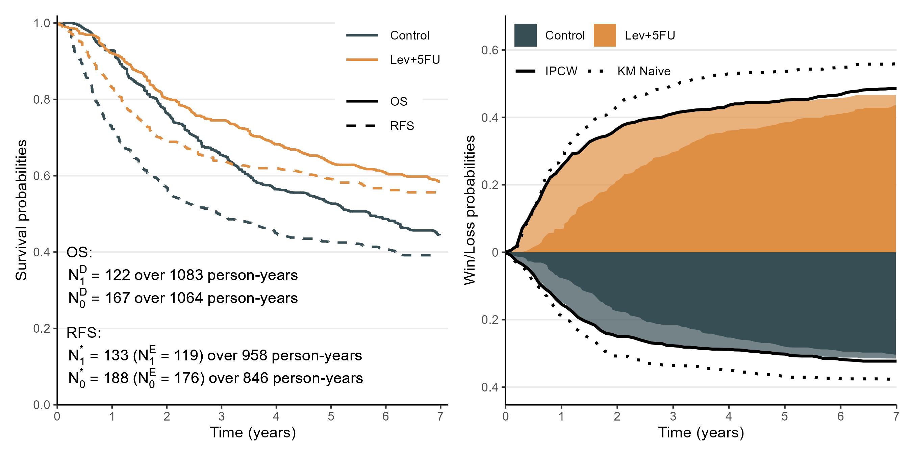
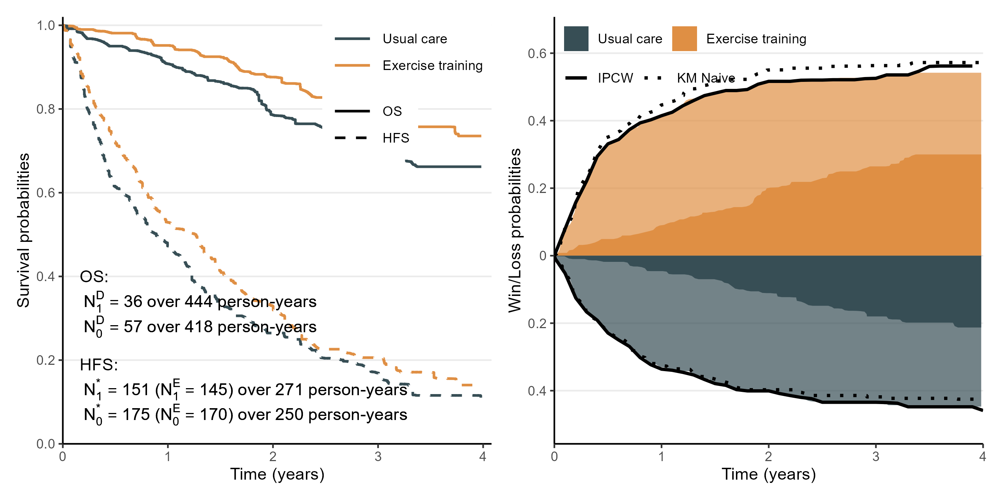

WinKM: Approximating win-loss probabilitiesUsing overall and event-free survival functions
Department of Biostatistics & Medical Informatics
University of Wisconsin-Madison
Visit https://lmaowisc.github.io/winKM
\[ \newcommand{\wh}{\widehat} \newcommand{\wt}{\widetilde} \def\bs{\boldsymbol} \newcommand{\red}{} \newcommand{\indep}{\perp \!\!\! \perp} <!-- \def\pr{{\rm pr}} --> <!-- \def\d{{\rm d}} --> \]
WinKM workflowFormula \[ H_a(t\mid\tau) \approx \prod_{0\leq u \leq t}\left(1 - \frac{N_a^{\rm E}}{N_a^*}{\rm d}\hat\Lambda_a^*(u)\underbrace{\prod_{u\leq s \leq \tau} \left[1 - \{\hat\kappa_a(u, s)-1\}\frac{{\rm d}\hat F_a(s)}{\hat S_a(s)}\right]}_{\text{Bias correction for $\tau$-survivorship}}\right) \]
Summary data needed
WinKM Workflowprepare_km_data(): read and clean digitized KM datamerge_endpoints(): align OS and PFS on a common time gridcompute_increments(): calculate \({\rm d}\hat S_a(t)\) and \({\rm d}\hat S^*_a(t)\)compute_followup(): derive total follow-up times from at-risk tablescompute_theta(): compute association parameters (\(\theta_a\))compute_win_loss(): calculate final win/loss probabilitiesrun_win_loss_workflow()

Manuscript
Mao, L. (2025+) Approximating Win-Loss Probabilities Based on the Overall and Event-Free Survival Functions. Available at http://dx.doi.org/10.2139/ssrn.5142445
WinKM Website
Calculating win-loss statistics using summary data: https://lmaowisc.github.io/winKM/
WinKM: approximating win-loss measures using published OS and EFS data